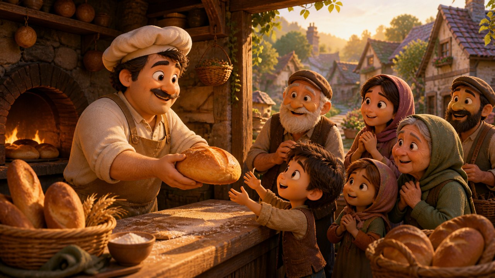
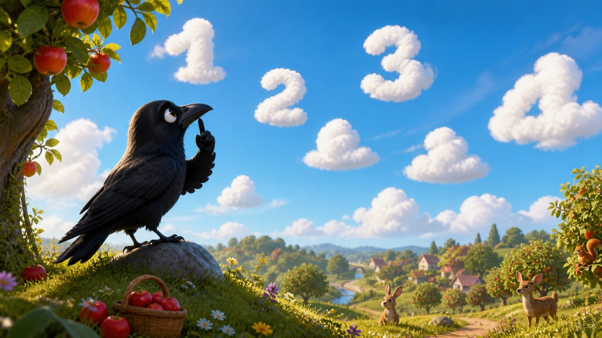
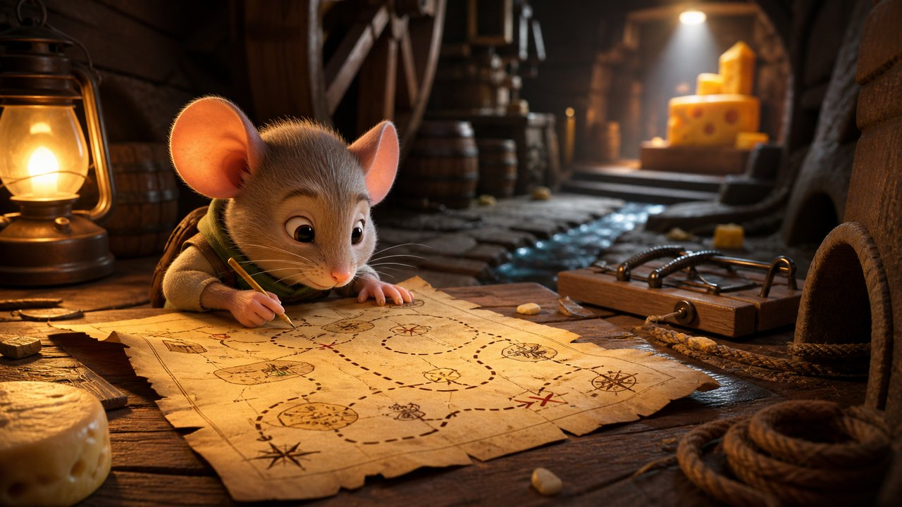
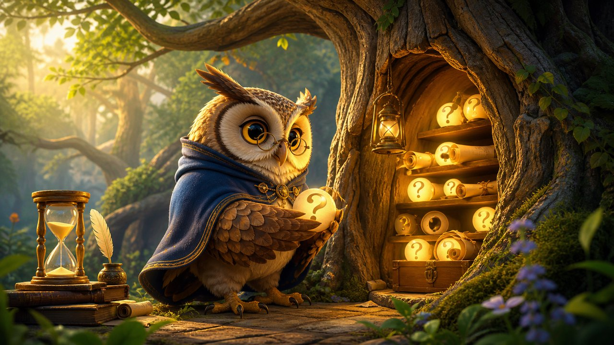
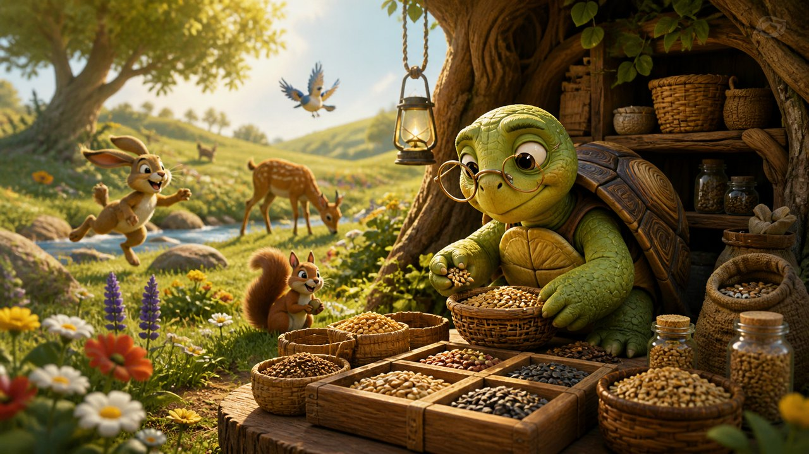

The Apricot Tree and the Late Rain
An apricot tree waits through a dry season and blooms again when help comes later than expected.
Moral: Hope is not naïve when it keeps working while it waits.
Story library
A clean collection of original moral stories, organized by topic and designed for comfortable reading.
Story finder
Search by title, character, topic, or moral. Then use the topic cards to narrow the collection.
Topics
An apricot tree waits through a dry season and blooms again when help comes later than expected.
Moral: Hope is not naïve when it keeps working while it waits.

A badger takes temporary shelter and learns that gratitude includes leaving a place better than you found it.
Moral: Gratitude is shown not only in thanks, but in care for what we borrow.

A baker must choose whether to keep his last loaf or share it when hunger visits his door.
Moral: Kindness becomes clearest when generosity costs something real.
A bee tries to keep honey only for herself and learns why sweetness survives through sharing.
Moral: What we hoard alone can trap us; what we share wisely can sustain many.
A blacksmith wants every task to obey his clock until a river teaches him the pace of durable work.
Moral: Some work must be timed by ripening, not by impatience.
A candle fears growing smaller if it lights others, then discovers that shared light deepens a room.
Moral: What is shared with wisdom can multiply rather than diminish.
A timid boy must carry a light through a long hall and discovers bravery in usefulness.
Moral: Fear becomes smaller when love gives you work to do.

A carpenter is tempted to hide a flawed gate until he learns that repair is better than disguise.
Moral: Honesty costs less than maintaining a lie.

A polished cup boasts about its beauty until a mountain spring shows that usefulness matters more than praise.
Moral: Beauty becomes deeper when it serves others well.

A crab who learns to hide his tracks discovers the freedom of walking plainly.
Moral: Honesty may feel risky at first, but it simplifies the soul.

A clever crow discovers that measuring everything is not the same as understanding what matters.
Moral: A busy mind can miss a simple truth when it counts everything except what matters.

A young deer receives a tiny bell that rings only when she pays attention to the present moment.
Moral: Attention turns noise into guidance.

A friendly donkey makes promises too easily until one difficult week teaches him to speak more carefully.
Moral: A promise is light to say and heavy to carry.

A finch returns after betrayal and discovers how truth and mercy can rebuild trust carefully.
Moral: Forgiveness is not forgetting the truth; it is choosing a future bigger than the injury.

A firefly worries that daylight will make his light meaningless, until he learns that every season has its work.
Moral: Courage includes accepting change and still offering your gift.

A fisherman keeps mending his net at night and learns that preparation often looks slow before it proves strong.
Moral: Patience is often invisible while it is becoming useful.

A fox tries to sound like a lion and discovers the cost of pretending to be more than he is.
Moral: Borrowed power becomes a burden; honest strength is easier to carry.
A neglected garden teaches a hurried child that living things grow by attention, not by impatience.
Moral: Growth cannot be shouted into being; it answers steady care.

A goat learns that humor can either wound a village or lift it with tenderness.
Moral: Kindness should guide even the sharpest wit.

A fast hare discovers that speed without attention leaves many good things unfinished.
Moral: Real speed comes from doing the next thing well.

A hedgehog tries to command everything around him and discovers the difference between control and guidance.
Moral: A leader serves the work instead of trying to own the weather.

A heron angered by a friend's mistake learns that healing requires more than rehearsing the wrong.
Moral: Forgiveness repairs vision as much as it repairs relationship.

A child wants a kite to fly high forever, but learns that guidance includes knowing when to hold and when to release.
Moral: Leadership balances vision with restraint.

A small lantern learns that courage is not the absence of darkness, but the decision to shine anyway.
Moral: Courage grows when you take the next honest step, even before the whole path is visible.

A hidden library records topics from birds of every kind, and a young visitor learns how to read experience humbly.
Moral: Wisdom is not merely gathered; it must be digested and lived.

A small bridge doubts its strength until a season of burden proves what it has quietly become.
Moral: Resilience is often discovered under weight, not before it.

A merchant tries to sell compliments and learns that kindness loses value when it becomes a trick.
Moral: Kind words are richest when they are true and freely given.

Animals visit a lake that reflects not faces, but habits they are finally ready to understand.
Moral: The clearest reflection is not what flatters us, but what helps us grow.

A mole who rarely sees the sky learns to sketch what he remembers and discover beauty he can share.
Moral: Creativity can turn limitation into a doorway.

A mouse with a beautiful map learns why plans need patient practice and attention to real obstacles.
Moral: A good plan is only the beginning; patient practice carries it across the floor.

An olive tree saves strength from one harsh season and uses it to shelter a new generation.
Moral: What you survive can become shelter for someone else.

Farmers competing for shade learn that orchards become generous when trees are planted for many.
Moral: The best work of a community often blesses people we may never meet.

An owl keeps unanswered questions in a hollow tree until the forest learns why not every answer should be rushed.
Moral: A patient question can protect you from a careless answer.
A proud stone mocks a river for moving slowly until time reveals the quiet strength of persistence.
Moral: Gentle persistence can shape what force alone cannot move.

A mayor irritated by a pebble learns that small discomforts can reveal neglected responsibilities.
Moral: Leaders should notice the small pains of ordinary people.

A young pine asks endless questions until a winter storm teaches which questions must be lived before they are answered.
Moral: Some wisdom arrives through weather, not words alone.

A distracted apprentice learns that careful attention is a form of respect for both craft and people.
Moral: Focus is love shown through attention to detail.

A reed stays modest beside taller plants and survives a storm that vanity could not.
Moral: Humility bends when pride breaks.

A curious cat keeps peering into new places and learns the difference between wonder and intrusion.
Moral: Curiosity grows wise when it respects other people's boundaries.

A seal mistakes echoes for applause until quiet waters teach her to hear herself clearly.
Moral: Not every loud response is true understanding.

Children build a fragile ship and learn that wonder grows wiser when it is joined to craft.
Moral: Curiosity travels farther when it respects reality.

A slow traveler writes what each celebration awakens in him and discovers patterns in his own heart.
Moral: Self-knowledge grows when experience is reflected on, not merely collected.

A sparrow bringing drops to a dry nest learns that small help is not foolish when it keeps hope alive.
Moral: Small help is still help, especially when it keeps someone from giving up.

A swallow delayed by weather is sheltered by strangers and later learns to extend the same care.
Moral: Gratitude grows complete when it becomes generosity.

A finch designs a dazzling coat but learns that creativity is most beautiful when it fits a real need.
Moral: Imagination shines brightest when it serves life, not vanity alone.

A tortoise stores seeds for the future while others laugh, until winter asks who remembered tomorrow.
Moral: Responsibility is kindness sent ahead to your future self and your community.

A talented bird learns that a nest stays strong only when small repairs are made early.
Moral: Small duties are often the beams that hold large hopes in place.

A basket woven for simple work grows stronger carrying heavy stones through changing seasons.
Moral: Strength often grows by carrying what seems beyond us one journey at a time.

A windmill stops working when no one praises it, then remembers what service is for.
Moral: Useful work has value even when no crowd is watching.

A proud wolf learns that trust grows when ears open before the mouth does.
Moral: Listening is one of the first labors of friendship.